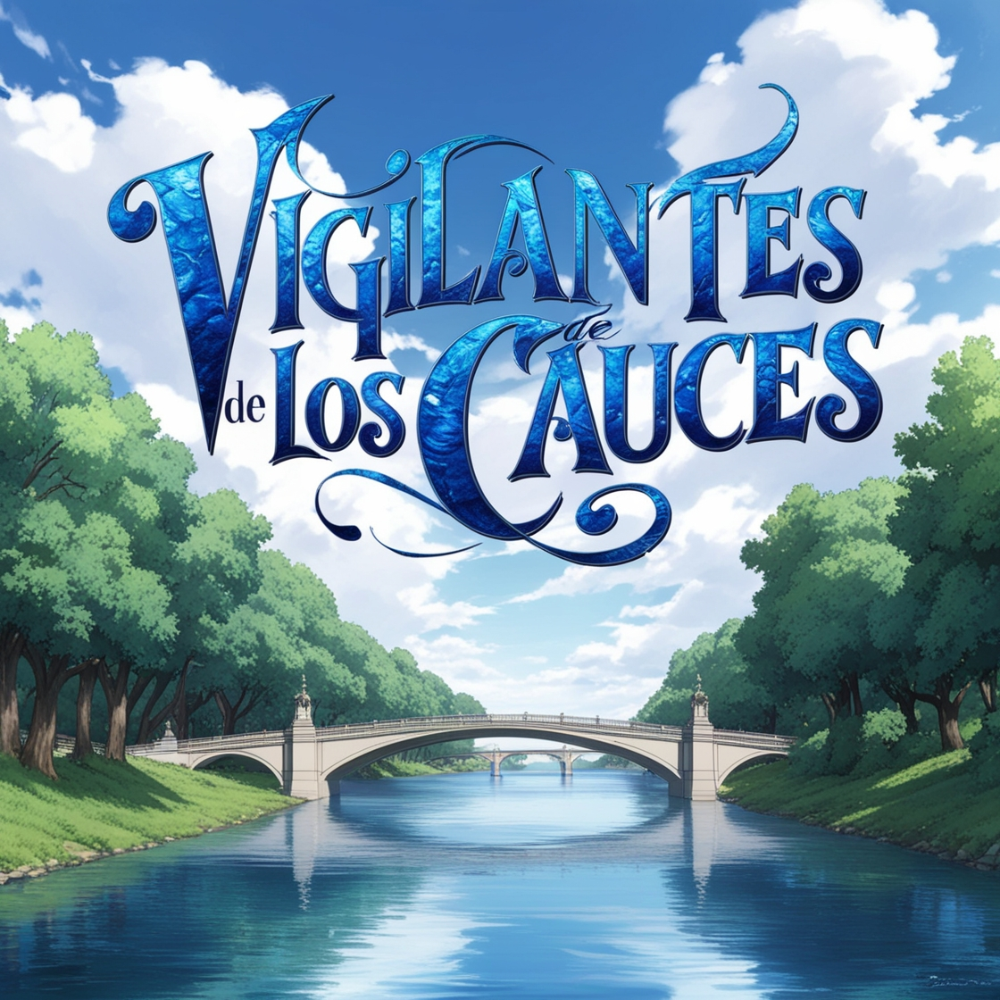

Todo empezó el 17 de mayo cuando Juan (nuestro docente), nos propuso la posibilidad de participar de las Olimpiadas en la categoría de Programación. A fines de ese mes decidimos participar, eligiendo el nombre “Vigilantes de los cauces” y definiendo una idea del programa, respetando la temática pedida.
El 15 de junio decidimos crear un archivo en Google Drive, donde documentaríamos todo lo que íbamos haciendo. Para adentrarnos en el problema tuvimos una entrevista con el alcalde de nuestra ciudad, logrando adquirir mucha información que nos serviría de mucho. Ya con el programa decidido empezamos a concurrir una hora antes a la institución para reunirnos con Juan y avanzar con el proyecto.
A partir de finales de junio y principios de julio, empezamos a hacer videoconferencias con nuestro tutor asignado por Ceibal, logrando terminar de definir el problema y la solución.
A finales de agosto ya teníamos una base del código en Java, logrando que cuando ejecutemos el programa nos devuelva la profundidad actual del agua; en caso de superar el límite establecido, también enviaría un mensaje de alerta.
Aprovechamos que en la asignatura ‘Programación 2’ dimos como tema los bots de Telegram, programando uno con funciones básicas, logrando que todo el programa esté automatizado en Telegram.
A inicios de septiembre terminamos el vídeo de presentación y lo enviamos junto a los dos textos pedidos. Seguimos avanzando con el código, y cuando nos dieron la fecha de la videoconferencia, nos preparamos junto al tutor asignado por Ceibal.
Luego de enterarnos de que estábamos clasificados a la final, tuvimos una reunión con el alcalde y el director del CECOED para conectar los datos de las sondas de nuestro río con el programa.
El 24 de octubre hicimos una videoconferencia con el Director de la CECOED, quien nos derivó con el encargado de la parte tecnológica. Él nos explicó que sería complicado conectar los datos en el corto plazo debido a una migración de hospedaje, por lo que quedamos a la espera.
